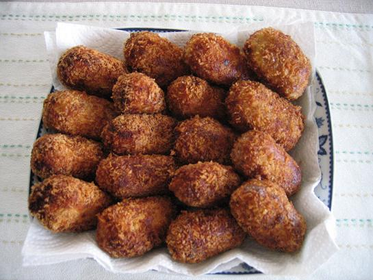

あと数日で娘も生後3ヶ月になります。
「自分の時間を持つ」。この目標を掲げてから、育児の合間にあれこれと自分の時間を作る努力を
してみたものの、なかなか容易ではありません。
育児がこんなに手を取られるものだとは思ってもみませんでした。
現在、私はどうしてもやりたいことが一つあって、何とか時間を作ろうとしたものの、
自由になる時間はどうやっても1日1時間が限度です。
1日1時間じゃ、全然足らない・・・。
もう少しまとまった時間があれば・・・1日5時間、いや3時間でもいい・・・。
睡眠時間を削れば時間を作ることは可能ですが、そうすると母乳の出が悪くなってしまうし・・・。
こう考えてみると、ここは諦めが肝心、今は育児に専念してやりたいことは来年、又は再来年の
お楽しみに取っとけばいいじゃぁないか。
とアタマでは納得しているものの、しつこい性格の私はなかなか諦められません・・・。
どうしよぉ・・・（困）
さて、本日の夕食のメニューはコロッケです。
写真を撮ってみました。
いっぱい作りすぎました。
明日の朝ゴハンもコロッケにしよう・・・。
|

|